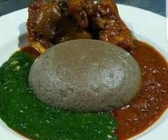
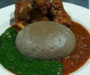

Nigerian Foods


 

 Explore
Explore
Welcome to the home of Nigerian delicacies comprising of popular
Igbo and Yoruba foods.
Are you wondering what Nigerian
foods to try on your upcoming trip to Nigeria?
I've got
you covered. In this article, I will introduce to you the most
popular dishes in this wonderful country so you can easily make
a plan to explore the essence of Nigerian cuisine. You can have
a great chance to learn about the origins, tastes, and
traditions associated with each dish. Much interesting
information is waiting for you ahead. Sit down, get a snack, and
enjoy plenty of fascinating stories.
Nigeria with her numerous cultural heritage haven over 200
ethnic groups with each tribe haven a uniquic type of foood that
is associated with them.
we bring to you a feel of some these special means found in
Nigeria.
Tuwo Shinkafa was invented by the Hausa tribe who
used to live in the northern area of the country. It comes in
the form of ball-shaped mashed rice or corn.
Nigerian
people love to make food from the cassava root, also called
“Garri.” They use dried grated cassava flour to make Ẹ̀bà, a
comfort food that is very popular among Yoruba people. It is
also made in other West African sub-regions.
Ẹ̀bà is made
by cooking dried grated cassava flour in hot water and shaping
it into a large ball. Its color can be white or yellow,
depending on how it is cooked. If people add palm oil when
drying the grated cassava, then the dish will have a yellow hue.
People eat Ẹ̀bà using their fingers. They take out a small
piece, turn it into a small ball, and then dip it in soup or
stew.
Egusi is the Nigerian word for “Melon.” The Yoruba
people created a soup from melon seed years ago and named it
“Egusi.” However, some theories posit that it actually belongs
to the Igbo people.You will also see “Egusi” in the food culture
of Cameroon, Mali, Ghana, and many more African countries.
Ground melon seeds are used to create a thick consistency of the
soup. Other ingredients include meat, fish, vegetables, and
seasonings. It has a distinctive nutty and spicy taste, thanks
to melon seeds. Nigerian people often eat Egusi soup at
celebrations and festivals. It is one of the most popular
delicacies in this country. Egusi and Fufu is a perfect Nigerian
lunch combo.
Abacha is native to the Igbo tribe, who
resided in Eastern Nigeria. It is made from the Nigerians'
favorite root vegetable, cassava. Most vegetable dishes in this
country are created from cassava. Although local people often
consider this salad a street food. It is also a Nigerian dessert
recipe. Feel free to enjoy it as a refreshing African dessert if
you want to. To make Abacha, people dry and shred cassava. It is
also seasoned with calabash nutmeg and other species. Then they
top it with fried meat or fish. Abacha is traditionally served
alongside Ugba, made from oil bean seeds. Abacha may be the best
salad that you've ever tasted.
More
 More
More